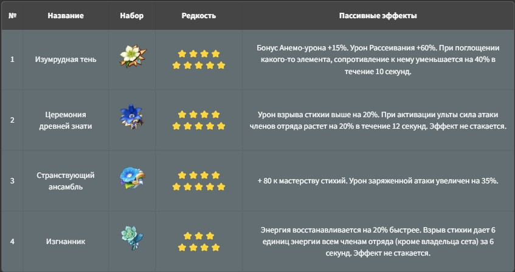
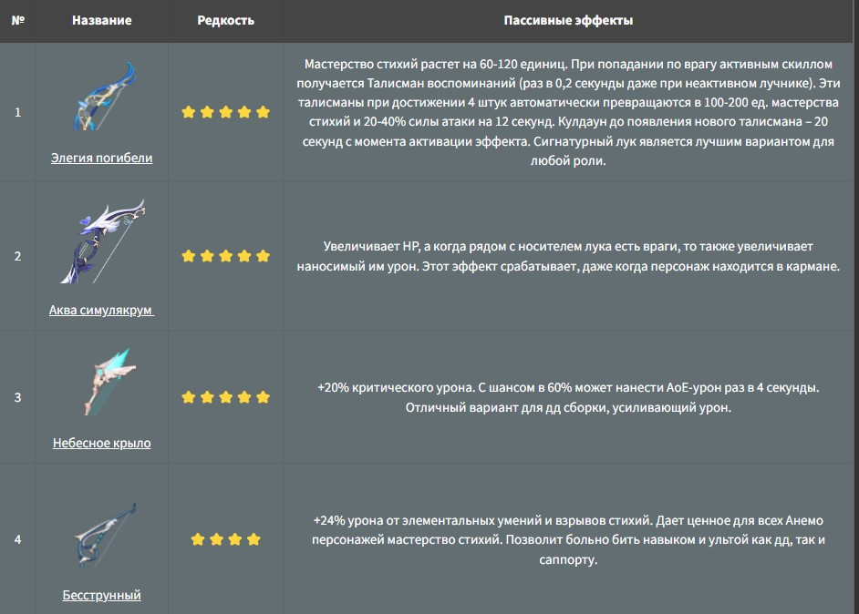

Венти – любимый сообществом ⭐️⭐️⭐️⭐️⭐️ персонаж, использующий лук и Анемо-стихию. В нем кроются личности обычного барда и Архонта Барбатоса. Навыки и таланты, которыми обладает Венти, позволяют ему быть одним из лучших персонажей поддержки в Genshin Impact. Герой заслуженно занимает место в S-ранге нашего тир-листа. Далее представлен подробный гайд по сборке оружия и артефактов, а также по выбору подходящих героев для формирования отряда с Венти в составе.
Самое лучшее оружие для Венти имеет мастерство стихий, крит. шанс/крит. урон в статах или восстановление энергии, а также возможность баффать команду. Любое оружие, которое отвечает этим требованиям, будет хорошо смотреться на этом персонаже.
Самый лучший сет для Венти — сет изумрудной тени, позволяющий срезать резисты к стихии союзников. Однако если он играет в команде без реакций, можно рассмотреть на него другие варианты, иным способом баффающие отряд или усиливающие только его собственный дамаг.
